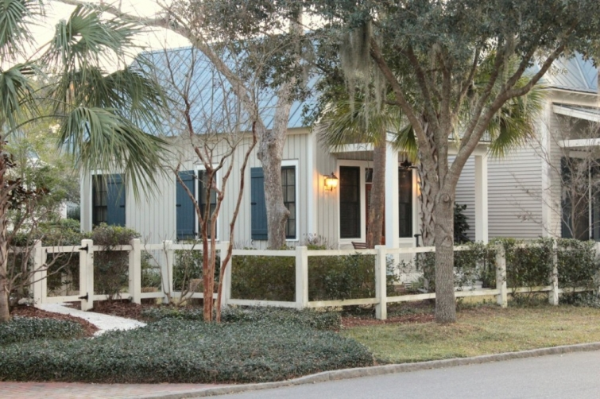
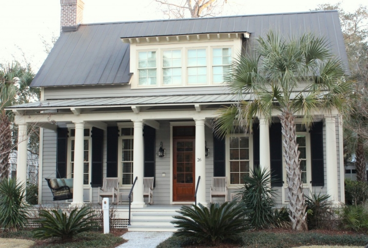

.png)
.PNG)
.PNG)
.PNG)
.PNG)
.PNG)
.JPG)
.JPG)
.PNG)
.PNG)



I knew the architecture would be a delightful mix of cottage and traditional, and goodness it did not disappoint!
The resort has 50 houses available for rent, and many of them have virtual tours on the website. Â I believe the great room in this next photo came from the house above. Â If it is not this house, then it is one that is its twin! (I’m a sucker for plank walls every time.)
We were there at dusk, which some photographers call “The Magic Hour,” but I call it, “How-in-the-world-do-I-figure-out-the-light-settings-on-my-camera!” time. Â So I apologize for the shadowy pictures. Â I do think all the colors in the resort complimented each other very well, and the light at dusk just accentuated that.
I did not see this next cottage in person, but I found it on their site and thought you might like it. Â I am not a big fan of the exterior, but I thought the interior was beautifully done (so I am putting both on here.) Â It is called their “Sport Cottage”…not sure why.
Isn’t the interior pretty? Very simple and classic.
Now, you know how I found houses that I recognized from magazines when we visited Habersham? Well…I bet you recognize this next one, don’t you?

I thought you would. Â It was designed by the wonderfully talented team at Historical Concepts and looked like this when it was featured in Southern Living magazine.
That soft blue green color on the exterior shutters was featured all through the cottage. Â It made such a soothing color scheme for the master bedroom.
My favorite part of that cottage was the view of the porch as it opened off the kitchen. historicalconcepts.com
historicalconcepts.com
Not all the homes there were small cottages.  Many were quite large and are available for rent through the Inn at Palmetto Bluff.  The next few are all rentals (but I would be very happy to live in any of them year round. 🙂 )

The gigantic oak  that was dripping with Spanish moss really gave this home its established look.
Here it is again – this time from the side (yes, we walked all around it.)  Those were azaleas blooming in the yard – in February!

This red roofed beauty is also available for rent.
designed by Gerald D. Cowart – Â Cowartgroup.com
Sigh.. If I could just pack up and move anywhere, I truly think Palmetto Bluff would be my choice.  I used to think Seaside, Florida was my idea of Heaven, but after seeing this resort, I believe it beats out Seaside. (That is saying a lot considering how long I have loved Seaside.)  Now my husband…he’s a different story.  He thinks Palmetto Bluff is “too perfect,” and that he could not be as “casual” as he normally is.  I reminded him that if we lived there, he would probably be spending most of his time in his kayak.  That changed his tune. 🙂
If you lived in the red roofed house above, you could spend most of your time out on the front porch.
That is where I am leaving you today. I wish I could have shown all of you Palmetto Bluff in person, but since I couldn’t, hopefully the photos here have given you a little taste of its beauty.
until next time,


.PNG)
I love your post! We have a home at Palmetto Bluff it is a place that truly takes up root in your heart.
——————————————————————–
How wonderful to have a place there Melanie! I am jealous. That is one gorgeous neighborhood!!
Kelly
Kelly, love your site, really love all the designs. The red roof house on this page at Palmetto Bluff, SC was designed by my husband, Architect, Gerald D Cowart, of Savannah, he is Registered in five states and would love to work with your followers. Our website is CowartGroup.com – contact gcowart@cowartgroup.com
If we can ever help you, please contact us.
Thank you, Gerald & Sally Cowart
Darling post! xoxo
————————————————————————
So glad you enjoyed it, Claudia!
Kelly
Oh Kelly! Another gorgeous tour! We just returned fom touring parts of Florida, but your tours keep pulling me to SC. 😉
————————————————————————-
Lisa – Lucky you to get to go to Florida this time of year! I am so glad you enjoyed the South Carolina posts. It is a lovely place. But, I will be doing a few post on Florida later this month and in April. So maybe you can take a virtual trip back to there then. 🙂
Kelly
I really like the red roofed one. Because it’s build with the door on an interior angle, I could feel secluded and sheltered, but still people watch : )
———————————————————————–
Julianna – That red roofed one sits prominently as the first big one you see as you come into the village. But you are correct in feeling secluded and yet able to people watch. It had such a wonderful front porch – as many of them did.
Kelly
Palmetto Bluff has some of the most exquisite houses – metal roofs, large porches and huge trees! I love it! I could see myself in any one of those homes. Thanks for the tour!
Jan ♥
———————————————————————
Jan – It was a beautiful place to see – both the architecture of all the homes and shops AND the landscaping. You should plan a road trip to visit it.
Kelly
Sighing, also. I would move there, too, although my heart may be in Charleston, or Hilton Head, or Isles of Palms….! We could be neighbors and drop by with homemade goodies and watch the world go by from our wonderful porches.
——————————————————————–
Paula – I think you have a great plan going there! LOL It would be so much fun (and relaxing too.) My daughter is thinking of transferring to a college in Charleston, so perhaps the reality is not all that farfetched.
Kelly
Now..I could definitely live in that red roofed house…it is gorgeous!!!….Now how far is Palmetto Bluff from Charleston?
———————————————————————-
Shirley – I loved that red roofed one too (of course!) It is a little over 2 hours to get to Palmetto Bluff from Charleston.
Kelly
sigh…I also love Seaside. My husband and I are already discussing taking a trip to South Carolina because of your beautiful pics!
——————————————————————-
Theresa – I do hope you get to visit Palmetto Bluff (although the warm weather we are having this weekend so makes me want to take a trip to Seaside! 🙂 ) Glad you enjoyed the photos.
Kelly
I have really enjoyed your series of posts on your South Carolina trip – the Inn looks amazing! We have two weddings to attend in South Carolina this Spring and I am already plotting to add on a trip to Palmetto Bluff after reading your posts!
Enjoy your weekend1
———————————————————————
Sandy – Oh you definitely should be planning on visiting Palmetto Bluff! If you don’t stay there, then at least enjoy a meal in one of their four (I think) restaurants and visit their little shops. It will be gorgeous in the spring!
Kelly
Kelly,
I loved the historical concepts house the best but you are right, I could take almost any of these and call them home sweet home.
Have a great weekend.
Karen
———————————————————————
Karen – There was not a single house there that I would not love, but I do truly love Historical Concepts attention to detail. Many of the cottages are their designs. (That is probably why I loved it all so much!)
Kelly
Loving all of the cottages! So inspired by that style for our new home.
———————————————————————–
Lindsay – Glad I could give you a little cottage inspiration! You will have such fun redoing your new home. 🙂
Kelly
Just gorgeous! You have me wanting to visit Palmetto Bluff! I love the photo of the kitchen as it opens right onto the porch. That gives me some wonderful ‘remodeling’ ideas and dreams.
What a delightful trip…thank you for sharing with us.
———————————————————————
Amy – I think if we were building a home on the coast, that one with the kitchen opening onto the porch would be exactly what we would build. I loved everything about it!
Kelly
Isn’t it the most charming place – adore the Historical Concepts house with the warm colors and paneled walls!!
———————————————————————
Kristy – Oh yes it is! I love everything that Historical Concepts has done. My dream job would be to work there. 🙂
Kelly
Oh my!! Just saw this as I was getting ready to turn off my iPhone!!NOW I really have some beautiful images to “dream” about tonight!! Sweet dreams to you and yours!! Happy blogging!
——————————————————————–
Louvina – Those cottages were certainly dream-worthy! I sure hope that we can go back and stay in one on another vacation.
Kelly